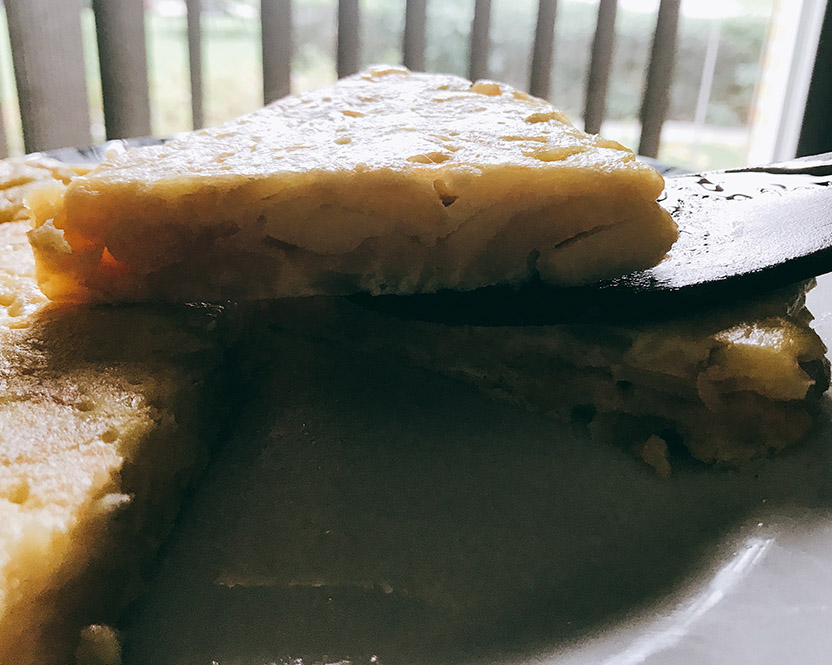
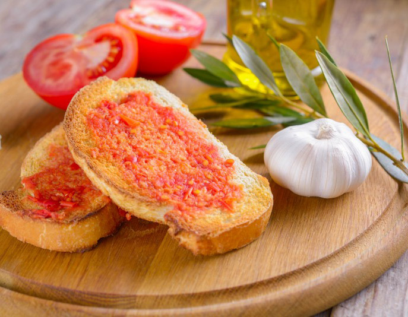
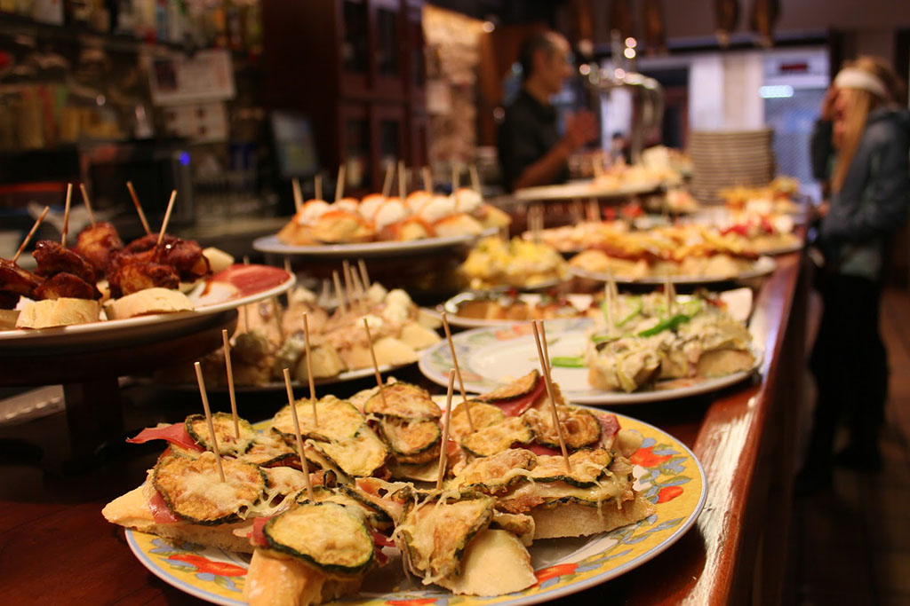

Discovering Spain
Learn about Spain, the perfect time to visit it and what typical food you can find in different parts of the country!
By Silvia Artero
Visiting Spain
Okay, so let’s talk about the beautiful Spain!
It has attractive and famous cities such as Madrid (the capital) and Barcelona, those two are the most well-known, also Seville in the south and Bilbao in the north.
Spain is divided into 17 autonomous communities which are Andalusia, Community of Madrid, Catalonia, Castilla-La Mancha, Galicia, Basque Country, Valencian Community, Castile and Leon, Asturias, La Rioja, Region of Murcia, Cantabria, Canary Islands, Navarre, Extremadura, Aragon, and Balearic Islands.

How’s the weather like in Spain?
For those who love hot summers it’s the perfect place to visit, actually the southern part of Spain is the warmest.
The weather in Spain changes depending on where you are. In the north there is more rain and cold days than in the south and southeast.
So, if you’re planning on visiting Spain and you like hot summers, going to the beach and getting tanned go near the coast or to the south, you’ll experience a really warm Spanish welcome!
But if you like more normal temperature visit the inner part of Spain or the north. Actually, a good time to visit this part of Spain is Spring in the months of April/May but also September/October just after the summer (also there are less tourists).
Typical food in the different parts of Spain
The most typical food in Spain is “tortilla española”, Spanish omelet. It’s an omelet made with eggs, potatoes and you can add onions, this is the traditional recipe, but you can also find some variations. TRY TO COOK IT!

In Catalonia is traditional to eat “pa amb tomaca”, it’s bread with olive oil and scrubbed tomato. Also “Calçots” which is a variety of onion that they cook and eat with a special souce.

Around Spain you also will find the famous “paella”, which is basically rice and other stuff, but it tastes so forking good. There are different types of “paella”, you can choose between Valencian paella, paella of fish, of meat, a mix between those two, of vegetables, black paella...
BUT in the Valencian Community you’ll find the best “paella” you can eat.
You’ll love Bilbao, they have the best TAPAS in Spain, they are known as Pintxos although in the whole Spain you can try this typical way of eating!

Now you may be hungry so go to our Recipes section and try new things to cook!